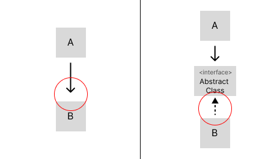

iconcert8's log
2023-03-17
객체지향 서적을 읽다보면 항상 나오는 단어가 있다.
'SOLID' 거의 모든 책에서 언급되고 지키고자 애쓰는 원칙이다.
SOLID는 로버트 마틴이 정의한 객체지향 프로그래밍 설계의 5가지 원칙이다.
여기서 오해하지 말아야 할 것이 만들었다가 아니라 정의했다이다. 이미 존재했던 개념들을 집약하였다고 보는 것이 맞다.
앞으로 알아볼 원칙은 생각해보면 당연하거나 어렴풋이 인지를 하고 있던 내용일 것이다.
하지만 추상적으로 지켜왔던 객체지향 프로그래밍에서 구체화된 설계 규율을 가지게 된다면 객체지향에 더 넓은 시야를 가지게 될 것이다.
SRP는 한국어로 단일 책임 원칙이라고 한다.
클래스는 하나의 책임만 지녀야 한다는 뜻이다.
여기서 단일 책임라는 말이 헷갈릴수 있다.
로버트 마틴은 사람들이 단일 책임에 가장 많은 오해가 있다고 말한다.
흔히 "단 하나의 일만 해야한다"는 오해를 하는데 이는 함수 범위의 개념이다.
함수는 1가지 일만 해야하고 클래스까지 오용해서는 안된다.
SRP의 본연의 뜻은
"하나의 모듈은 오직 하나의 액터에 대해서만 책임져야 한다"
여기서 모듈은 응집된 데이터/함수를 나타내고, 액터는 사용자 혹은 이해관계자 정도로 이해하면 된다.
예를 들어보자. 회계팀과 개발팀을 관리하는 엑셀이 있다.
회계팀에서 인턴제도를 실시하게 되어 엑셀에 인턴이라는 항목이 추가되었다.
개발팀과는 전혀 상관이 없지만 엑셀에는 인턴 데이터가 추가 되었다.
반대로 개발팀이 사용 언어 별로 직원들을 관리하고자 한다.
엑셀은 회계팀의 생각과는 별개로 수정이 반복된다.
이 경우 엑셀(모듈)은 팀(액터)별로 분리되는 것이 맞다.
이제 "하나의 모듈이 하나의 액터에 대해서만 책임져야 한다"는 의미를 이해 할 수 있을 것이다.
"소프트웨어 개체는 확장에는 열려 있어야 하고, 변경에는 닫혀 있어야 한다"
한국어로는 개방 폐쇄 원칙이라고 한다.
올바른 소프트웨어의 방향성이라고 생각한다.
소프트웨어는 언제나 확장에 대한 압박을 받는다.
그런데 확장과 동시에 기존 코드를 뜯어 고쳐야 한다면 새로운 소프트웨어를 만들어 내는 것과 다를 바 없다.
어느순간 처음부터 개발하는 게 낫겠다라는 시점이 올 것이다.
OCP는 올바른 확장에 대한 개념이다.
수정을 '0'으로 수렴하도록 하고 확장에만 몰두 할 수 있는 설계이다.
모든 상황에 대처 가능한 설계는 없다.
하지만 변경 가능하다는 개념을 설계에 접목하게 되면, 더욱더 구조화 되고 읽기 쉬운 코드가 될 것이다.
확장을 위해 많은 부분이 추상화 되고 레이어의 구분이 생길 것이다.
이를 도식화화면 처음 코드를 접한 사람도 구조와 의도를 쉽게 파악 할 수 있을 것이다.
디자인 패턴의 많은 패턴들이 OCP를 달성할 수 있도록 도와준다. Strategy Pattern, Decorator Pattern 등이 대표적으로 있다.
한국어로는 리스코프 치환 원칙이라고 한다. 개념은 단순하고 명확하다.
"하위 타입의 다른 클래스로 변경해도 행위가 바뀌어서는 안된다"
하위클래스로 변경했다고 해서 행위 자체가 변하거나 실행이 되지 않는다면 그것은 상위 타입을 잘못 설계한 것이다.
예를 보자.
Java에는 Collection 인터페이스가 있다. 하위 클래스로 List와 Set이 대표적으로 있다.
어떤 함수가 List의 add(), remove() 함수를 사용하고 있다. 이때 List를 Set으로 바꾼다고 해서 행위가 바뀌지 않는다.
여전히 add()로 요소를 추가하고 remove()로 요소를 삭제한다. 자료구조적인 차이가 있을 뿐 행위에는 변화가 없다.
당연한 얘기일 수 있지만 Collection의 add()는 요소가 추가되어야 한다는 의미로, remove()는 삭제한다는 의미로 구현되어야 한다.
이를 어기면 코드의 신뢰도가 없어져 버린다.
한국어로는 인터페이스 분리 원칙이다. 인터페이스를 분리해야 한다는 의미로
"사용하는 인터페이스만 사용해야 한다"
인터페이스에 다양한 추상 메소드를 구성 해놓고 필요에 따라 선택적으로 구현하는 경우가 있다.
이는 상관 없어야 하는 하위 클래스간의 결합도를 높여버린다. 결합도가 높은 코드는 수정에 취약하다.
그리고 사용하지 않게되는 추상 메소드는 코드의 신뢰도를 낮추게 된다. 위 원칙들에서 언급했던 문제들이 복합적으로 나타나게 되는 것이다.
Java에서 보여주는 좋은 예시로 비교가 필요한 클래스는 Comparable 인터페이스를 상속받도록 하여 필요한 인터페이스를 구현 하도록 한다.
한국어로는 의존성 역전 원칙이다. 의존성 역전의 의미는
"코드의 의존성이 구현체가 아닌 추상에 의존하는 것이다"
UML(Unified Modeling Language)에서 구현체가 아닌 추상체를 상속받는 형태로 바꾸면 UML 화살표의 방향이 역전이 된다.

그림을 참고하면 의존성 역전의 의미를 알 수 있을 것이다.
추상화에 의존함으로써 OCP 원칙도 자연스럽게 달성 할 수 있다.
확장에 열리는 구조가 된다.